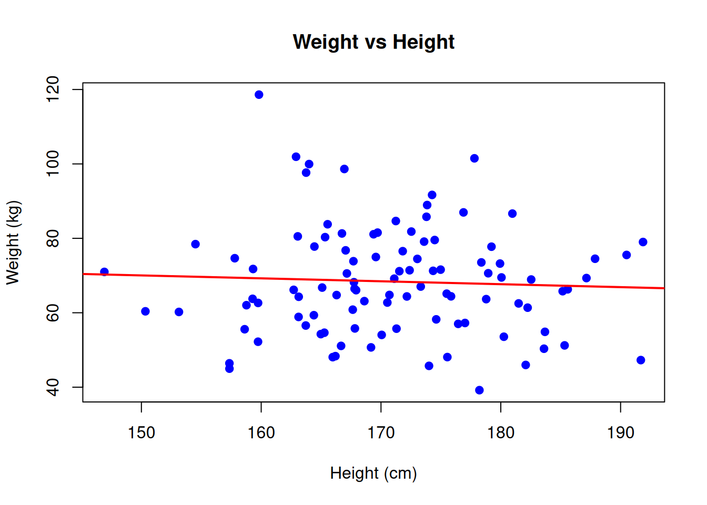
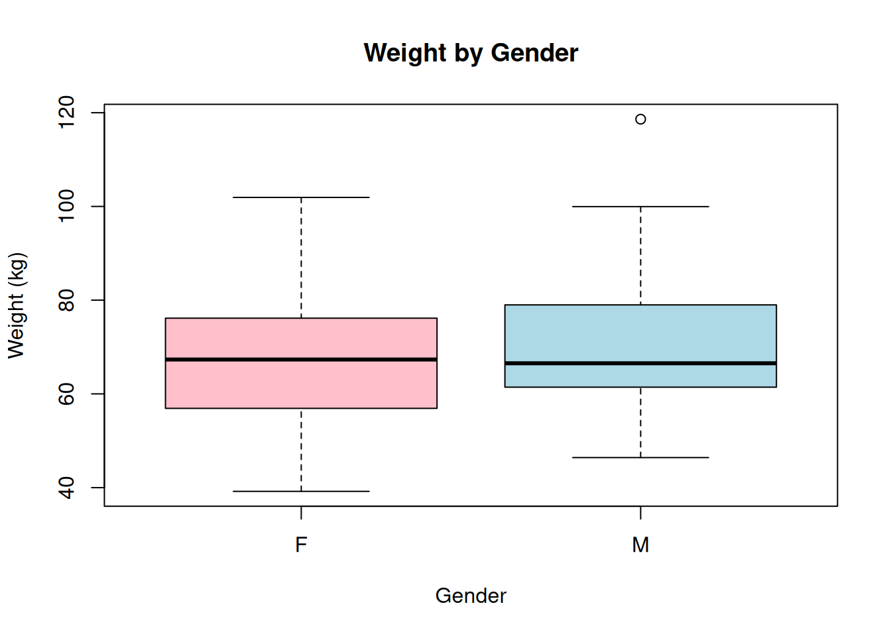

Last updated: 2025-12-30
Checks: 7 0
Knit directory: muse/
This reproducible R Markdown analysis was created with workflowr (version 1.7.1). The Checks tab describes the reproducibility checks that were applied when the results were created. The Past versions tab lists the development history.
Great! Since the R Markdown file has been committed to the Git repository, you know the exact version of the code that produced these results.
Great job! The global environment was empty. Objects defined in the global environment can affect the analysis in your R Markdown file in unknown ways. For reproduciblity it’s best to always run the code in an empty environment.
The command set.seed(20200712) was run prior to running
the code in the R Markdown file. Setting a seed ensures that any results
that rely on randomness, e.g. subsampling or permutations, are
reproducible.
Great job! Recording the operating system, R version, and package versions is critical for reproducibility.
Nice! There were no cached chunks for this analysis, so you can be confident that you successfully produced the results during this run.
Great job! Using relative paths to the files within your workflowr project makes it easier to run your code on other machines.
Great! You are using Git for version control. Tracking code development and connecting the code version to the results is critical for reproducibility.
The results in this page were generated with repository version bc7a77d. See the Past versions tab to see a history of the changes made to the R Markdown and HTML files.
Note that you need to be careful to ensure that all relevant files for
the analysis have been committed to Git prior to generating the results
(you can use wflow_publish or
wflow_git_commit). workflowr only checks the R Markdown
file, but you know if there are other scripts or data files that it
depends on. Below is the status of the Git repository when the results
were generated:
Ignored files:
Ignored: .Rproj.user/
Ignored: data/1M_neurons_filtered_gene_bc_matrices_h5.h5
Ignored: data/293t/
Ignored: data/293t_3t3_filtered_gene_bc_matrices.tar.gz
Ignored: data/293t_filtered_gene_bc_matrices.tar.gz
Ignored: data/5k_Human_Donor1_PBMC_3p_gem-x_5k_Human_Donor1_PBMC_3p_gem-x_count_sample_filtered_feature_bc_matrix.h5
Ignored: data/5k_Human_Donor2_PBMC_3p_gem-x_5k_Human_Donor2_PBMC_3p_gem-x_count_sample_filtered_feature_bc_matrix.h5
Ignored: data/5k_Human_Donor3_PBMC_3p_gem-x_5k_Human_Donor3_PBMC_3p_gem-x_count_sample_filtered_feature_bc_matrix.h5
Ignored: data/5k_Human_Donor4_PBMC_3p_gem-x_5k_Human_Donor4_PBMC_3p_gem-x_count_sample_filtered_feature_bc_matrix.h5
Ignored: data/97516b79-8d08-46a6-b329-5d0a25b0be98.h5ad
Ignored: data/Parent_SC3v3_Human_Glioblastoma_filtered_feature_bc_matrix.tar.gz
Ignored: data/brain_counts/
Ignored: data/cl.obo
Ignored: data/cl.owl
Ignored: data/jurkat/
Ignored: data/jurkat:293t_50:50_filtered_gene_bc_matrices.tar.gz
Ignored: data/jurkat_293t/
Ignored: data/jurkat_filtered_gene_bc_matrices.tar.gz
Ignored: data/pbmc20k/
Ignored: data/pbmc20k_seurat/
Ignored: data/pbmc3k.h5ad
Ignored: data/pbmc3k/
Ignored: data/pbmc3k_bpcells_mat/
Ignored: data/pbmc3k_export.mtx
Ignored: data/pbmc3k_matrix.mtx
Ignored: data/pbmc3k_seurat.rds
Ignored: data/pbmc4k_filtered_gene_bc_matrices.tar.gz
Ignored: data/pbmc_1k_v3_filtered_feature_bc_matrix.h5
Ignored: data/pbmc_1k_v3_raw_feature_bc_matrix.h5
Ignored: data/refdata-gex-GRCh38-2020-A.tar.gz
Ignored: data/seurat_1m_neuron.rds
Ignored: data/t_3k_filtered_gene_bc_matrices.tar.gz
Ignored: r_packages_4.4.1/
Ignored: r_packages_4.5.0/
Untracked files:
Untracked: analysis/bioc.Rmd
Untracked: analysis/bioc_scrnaseq.Rmd
Untracked: analysis/likelihood.Rmd
Untracked: bpcells_matrix/
Untracked: data/Caenorhabditis_elegans.WBcel235.113.gtf.gz
Untracked: data/GCF_043380555.1-RS_2024_12_gene_ontology.gaf.gz
Untracked: data/arab.rds
Untracked: data/astronomicalunit.csv
Untracked: data/femaleMiceWeights.csv
Untracked: data/lung_bcell.rds
Untracked: m3/
Untracked: women.json
Unstaged changes:
Modified: analysis/isoform_switch_analyzer.Rmd
Note that any generated files, e.g. HTML, png, CSS, etc., are not included in this status report because it is ok for generated content to have uncommitted changes.
These are the previous versions of the repository in which changes were
made to the R Markdown (analysis/formula.Rmd) and HTML
(docs/formula.html) files. If you’ve configured a remote
Git repository (see ?wflow_git_remote), click on the
hyperlinks in the table below to view the files as they were in that
past version.
| File | Version | Author | Date | Message |
|---|---|---|---|---|
| Rmd | bc7a77d | Dave Tang | 2025-12-30 | R formula syntax |
R’s formula syntax is a special notation that describes relationships between variables. It’s used extensively in statistical modeling, data visualisation, and data manipulation. While it may seem cryptic at first, it’s actually quite intuitive once you understand the basic components.
Formulas provide a concise, readable way to specify:
The fundamental structure is:
response ~ predictorThe ~ (tilde) symbol is read as “is modeled by” or
“depends on”.
# Create sample data
set.seed(123)
df <- data.frame(
height = rnorm(100, 170, 10),
weight = rnorm(100, 70, 15),
age = sample(20:60, 100, replace = TRUE),
gender = sample(c("M", "F"), 100, replace = TRUE)
)
# Example 1: Simple linear regression
# "weight depends on height"
model1 <- lm(weight ~ height, data = df)
summary(model1)
Call:
lm(formula = weight ~ height, data = df)
Residuals:
Min 1Q Median 3Q Max
-28.610 -10.253 -1.312 8.710 49.356
Coefficients:
Estimate Std. Error t value Pr(>|t|)
(Intercept) 81.83822 27.43765 2.983 0.00361 **
height -0.07871 0.16032 -0.491 0.62456
---
Signif. codes: 0 '***' 0.001 '**' 0.01 '*' 0.05 '.' 0.1 ' ' 1
Residual standard error: 14.56 on 98 degrees of freedom
Multiple R-squared: 0.002453, Adjusted R-squared: -0.007726
F-statistic: 0.241 on 1 and 98 DF, p-value: 0.6246Use + to include multiple independent predictors:
# Multiple predictors (additive model)
# "weight depends on height AND age"
model2 <- lm(weight ~ height + age, data = df)
summary(model2)
Call:
lm(formula = weight ~ height + age, data = df)
Residuals:
Min 1Q Median 3Q Max
-28.025 -10.423 -1.420 8.964 48.563
Coefficients:
Estimate Std. Error t value Pr(>|t|)
(Intercept) 87.81299 28.07134 3.128 0.00232 **
height -0.08245 0.16035 -0.514 0.60831
age -0.13097 0.13018 -1.006 0.31689
---
Signif. codes: 0 '***' 0.001 '**' 0.01 '*' 0.05 '.' 0.1 ' ' 1
Residual standard error: 14.56 on 97 degrees of freedom
Multiple R-squared: 0.01275, Adjusted R-squared: -0.007601
F-statistic: 0.6266 on 2 and 97 DF, p-value: 0.5365Use : to specify interactions between variables:
# Interaction term only
# "weight depends on the interaction between height and age"
model3 <- lm(weight ~ height:age, data = df)
summary(model3)
Call:
lm(formula = weight ~ height:age, data = df)
Residuals:
Min 1Q Median 3Q Max
-28.394 -9.711 -1.388 8.990 49.208
Coefficients:
Estimate Std. Error t value Pr(>|t|)
(Intercept) 73.5855405 5.3758323 13.688 <2e-16 ***
height:age -0.0007469 0.0007437 -1.004 0.318
---
Signif. codes: 0 '***' 0.001 '**' 0.01 '*' 0.05 '.' 0.1 ' ' 1
Residual standard error: 14.5 on 98 degrees of freedom
Multiple R-squared: 0.01019, Adjusted R-squared: 8.709e-05
F-statistic: 1.009 on 1 and 98 DF, p-value: 0.3177Use * as shorthand for main effects plus their
interaction:
# Main effects plus interaction
# height * age expands to: height + age + height:age
model4 <- lm(weight ~ height * age, data = df)
summary(model4)
Call:
lm(formula = weight ~ height * age, data = df)
Residuals:
Min 1Q Median 3Q Max
-30.132 -10.888 -0.734 9.361 47.093
Coefficients:
Estimate Std. Error t value Pr(>|t|)
(Intercept) 238.16546 107.39400 2.218 0.0289 *
height -0.95756 0.62430 -1.534 0.1284
age -3.84375 2.56409 -1.499 0.1371
height:age 0.02162 0.01491 1.450 0.1504
---
Signif. codes: 0 '***' 0.001 '**' 0.01 '*' 0.05 '.' 0.1 ' ' 1
Residual standard error: 14.48 on 96 degrees of freedom
Multiple R-squared: 0.03391, Adjusted R-squared: 0.003718
F-statistic: 1.123 on 3 and 96 DF, p-value: 0.3437# This is equivalent to:
model4b <- lm(weight ~ height + age + height:age, data = df)Use - to exclude specific terms:
# Remove a term
# Include all but remove age
model5 <- lm(weight ~ height + age + gender - age, data = df)
# Equivalent to: lm(weight ~ height + gender, data = df)Use . to include all variables except the response:
# Use all predictors in the dataset
model6 <- lm(weight ~ ., data = df)
summary(model6)
Call:
lm(formula = weight ~ ., data = df)
Residuals:
Min 1Q Median 3Q Max
-27.274 -10.122 -0.648 9.480 47.619
Coefficients:
Estimate Std. Error t value Pr(>|t|)
(Intercept) 85.73544 28.35303 3.024 0.0032 **
height -0.07606 0.16117 -0.472 0.6380
age -0.12677 0.13076 -0.969 0.3347
genderM 1.85382 2.95186 0.628 0.5315
---
Signif. codes: 0 '***' 0.001 '**' 0.01 '*' 0.05 '.' 0.1 ' ' 1
Residual standard error: 14.61 on 96 degrees of freedom
Multiple R-squared: 0.01679, Adjusted R-squared: -0.01393
F-statistic: 0.5466 on 3 and 96 DF, p-value: 0.6516# Remove specific variables
model7 <- lm(weight ~ . - gender, data = df)Use ^ to include interactions up to a specified
level:
# All main effects and 2-way interactions
model8 <- lm(weight ~ (height + age + gender)^2, data = df)
# Expands to: height + age + gender + height:age + height:gender + age:gender
summary(model8)
Call:
lm(formula = weight ~ (height + age + gender)^2, data = df)
Residuals:
Min 1Q Median 3Q Max
-28.950 -10.750 -1.079 7.571 43.103
Coefficients:
Estimate Std. Error t value Pr(>|t|)
(Intercept) 202.72867 111.36163 1.820 0.0719 .
height -0.77940 0.64475 -1.209 0.2298
age -3.46884 2.60273 -1.333 0.1859
genderM 68.60697 59.99128 1.144 0.2557
height:age 0.02000 0.01506 1.328 0.1875
height:genderM -0.33507 0.34259 -0.978 0.3306
age:genderM -0.23413 0.26561 -0.881 0.3803
---
Signif. codes: 0 '***' 0.001 '**' 0.01 '*' 0.05 '.' 0.1 ' ' 1
Residual standard error: 14.55 on 93 degrees of freedom
Multiple R-squared: 0.0552, Adjusted R-squared: -0.005753
F-statistic: 0.9056 on 6 and 93 DF, p-value: 0.4945Used in packages like lattice and lme4 for
grouping:
# In lattice graphics: plot y by x, separately for each level of z
xyplot(weight ~ height | gender, data = df)
# In mixed models: random effects grouped by subject
library(lme4)
lmer(weight ~ height + (1|subject), data = df)Use I() to perform arithmetic operations literally:
# Square a variable
model9 <- lm(weight ~ height + I(height^2), data = df)
# Without I(), the ^ operator has special meaning in formulas
# With I(), it's treated as arithmetic exponentiationCreate orthogonal polynomial terms:
# Second-degree polynomial
model10 <- lm(weight ~ poly(height, 2), data = df)
summary(model10)
Call:
lm(formula = weight ~ poly(height, 2), data = df)
Residuals:
Min 1Q Median 3Q Max
-29.052 -10.937 -1.786 9.816 49.979
Coefficients:
Estimate Std. Error t value Pr(>|t|)
(Intercept) 68.387 1.456 46.980 <2e-16 ***
poly(height, 2)1 -7.149 14.557 -0.491 0.624
poly(height, 2)2 -14.952 14.557 -1.027 0.307
---
Signif. codes: 0 '***' 0.001 '**' 0.01 '*' 0.05 '.' 0.1 ' ' 1
Residual standard error: 14.56 on 97 degrees of freedom
Multiple R-squared: 0.01319, Adjusted R-squared: -0.007159
F-statistic: 0.6481 on 2 and 97 DF, p-value: 0.5253Apply functions directly in formulas:
# Log transformation
model11 <- lm(log(weight) ~ height, data = df)
# Multiple transformations
model12 <- lm(weight ~ log(height) + sqrt(age), data = df)# Scatter plot with formula notation
plot(weight ~ height, data = df,
main = "Weight vs Height",
xlab = "Height (cm)",
ylab = "Weight (kg)",
pch = 19, col = "blue")
abline(lm(weight ~ height, data = df), col = "red", lwd = 2)
# Boxplot with formula
boxplot(weight ~ gender, data = df,
main = "Weight by Gender",
xlab = "Gender",
ylab = "Weight (kg)",
col = c("pink", "lightblue"))
# Create categorical data
df$age_group <- cut(df$age, breaks = c(0, 30, 45, 100),
labels = c("Young", "Middle", "Senior"))
# One-way ANOVA
aov1 <- aov(weight ~ age_group, data = df)
summary(aov1) Df Sum Sq Mean Sq F value Pr(>F)
age_group 2 305 152.5 0.721 0.489
Residuals 97 20523 211.6 # Two-way ANOVA with interaction
aov2 <- aov(weight ~ age_group * gender, data = df)
summary(aov2) Df Sum Sq Mean Sq F value Pr(>F)
age_group 2 305 152.52 0.718 0.490
gender 1 92 91.89 0.433 0.512
age_group:gender 2 471 235.51 1.109 0.334
Residuals 94 19961 212.35 # Aggregate function uses formulas
# Calculate mean weight by gender
aggregate(weight ~ gender, data = df, FUN = mean) gender weight
1 F 67.47088
2 M 69.55251# Multiple variables
aggregate(cbind(weight, height) ~ gender + age_group, data = df, FUN = mean) gender age_group weight height
1 F Young 70.60824 172.8042
2 M Young 71.67341 172.5615
3 F Middle 65.43550 169.9501
4 M Middle 73.15206 168.0989
5 F Senior 67.69240 171.9951
6 M Senior 65.33892 170.4329# Remove intercept with -1 or +0
model13 <- lm(weight ~ height - 1, data = df)
model14 <- lm(weight ~ height + 0, data = df)# Update an existing model
model_updated <- update(model2, . ~ . + gender)
# Adds gender to the existing formula
# Remove a term
model_updated2 <- update(model2, . ~ . - age)# Three-way interaction
model15 <- lm(weight ~ height * age * gender, data = df)
# Specific interaction structure
model16 <- lm(weight ~ height + age + height:age + gender, data = df)| Operator | Meaning | Example |
|---|---|---|
~ |
“modeled by” | y ~ x |
+ |
Include term | y ~ x + z |
- |
Exclude term | y ~ . - x |
: |
Interaction only | y ~ x:z |
* |
Main effects + interaction | y ~ x * z equals y ~ x + z + x:z |
. |
All other variables | y ~ . |
^ |
Interactions to degree | y ~ (x + z)^2 |
I() |
As-is arithmetic | y ~ I(x^2) |
-1 or +0 |
Remove intercept | y ~ x - 1 |
1 |
Intercept only | y ~ 1 |
model.matrix()
to see how your formula expands# See how formula expands to design matrix
head(model.matrix(weight ~ height * gender, data = df)) (Intercept) height genderM height:genderM
1 1 164.3952 0 0.0000
2 1 167.6982 0 0.0000
3 1 185.5871 1 185.5871
4 1 170.7051 0 0.0000
5 1 171.2929 1 171.2929
6 1 187.1506 0 0.0000R’s formula syntax is a powerful and elegant way to specify statistical models and data relationships. While it has a learning curve, mastering formulas will make your R code more concise and expressive. Practice with real data, and soon the notation will become second nature!
?formula?lm, ?glm,
?aovvignette("formula") in various
packageslme4,
mgcv, and nlme for more complex formula
applications
sessionInfo()R version 4.5.0 (2025-04-11)
Platform: x86_64-pc-linux-gnu
Running under: Ubuntu 24.04.3 LTS
Matrix products: default
BLAS: /usr/lib/x86_64-linux-gnu/openblas-pthread/libblas.so.3
LAPACK: /usr/lib/x86_64-linux-gnu/openblas-pthread/libopenblasp-r0.3.26.so; LAPACK version 3.12.0
locale:
[1] LC_CTYPE=en_US.UTF-8 LC_NUMERIC=C
[3] LC_TIME=en_US.UTF-8 LC_COLLATE=en_US.UTF-8
[5] LC_MONETARY=en_US.UTF-8 LC_MESSAGES=en_US.UTF-8
[7] LC_PAPER=en_US.UTF-8 LC_NAME=C
[9] LC_ADDRESS=C LC_TELEPHONE=C
[11] LC_MEASUREMENT=en_US.UTF-8 LC_IDENTIFICATION=C
time zone: Etc/UTC
tzcode source: system (glibc)
attached base packages:
[1] stats graphics grDevices utils datasets methods base
other attached packages:
[1] lubridate_1.9.4 forcats_1.0.0 stringr_1.5.1 dplyr_1.1.4
[5] purrr_1.0.4 readr_2.1.5 tidyr_1.3.1 tibble_3.3.0
[9] ggplot2_3.5.2 tidyverse_2.0.0 workflowr_1.7.1
loaded via a namespace (and not attached):
[1] sass_0.4.10 generics_0.1.4 stringi_1.8.7 hms_1.1.3
[5] digest_0.6.37 magrittr_2.0.3 timechange_0.3.0 evaluate_1.0.3
[9] grid_4.5.0 RColorBrewer_1.1-3 fastmap_1.2.0 rprojroot_2.0.4
[13] jsonlite_2.0.0 processx_3.8.6 whisker_0.4.1 ps_1.9.1
[17] promises_1.3.3 httr_1.4.7 scales_1.4.0 jquerylib_0.1.4
[21] cli_3.6.5 rlang_1.1.6 withr_3.0.2 cachem_1.1.0
[25] yaml_2.3.10 tools_4.5.0 tzdb_0.5.0 httpuv_1.6.16
[29] vctrs_0.6.5 R6_2.6.1 lifecycle_1.0.4 git2r_0.36.2
[33] fs_1.6.6 pkgconfig_2.0.3 callr_3.7.6 pillar_1.10.2
[37] bslib_0.9.0 later_1.4.2 gtable_0.3.6 glue_1.8.0
[41] Rcpp_1.0.14 xfun_0.52 tidyselect_1.2.1 rstudioapi_0.17.1
[45] knitr_1.50 farver_2.1.2 htmltools_0.5.8.1 rmarkdown_2.29
[49] compiler_4.5.0 getPass_0.2-4